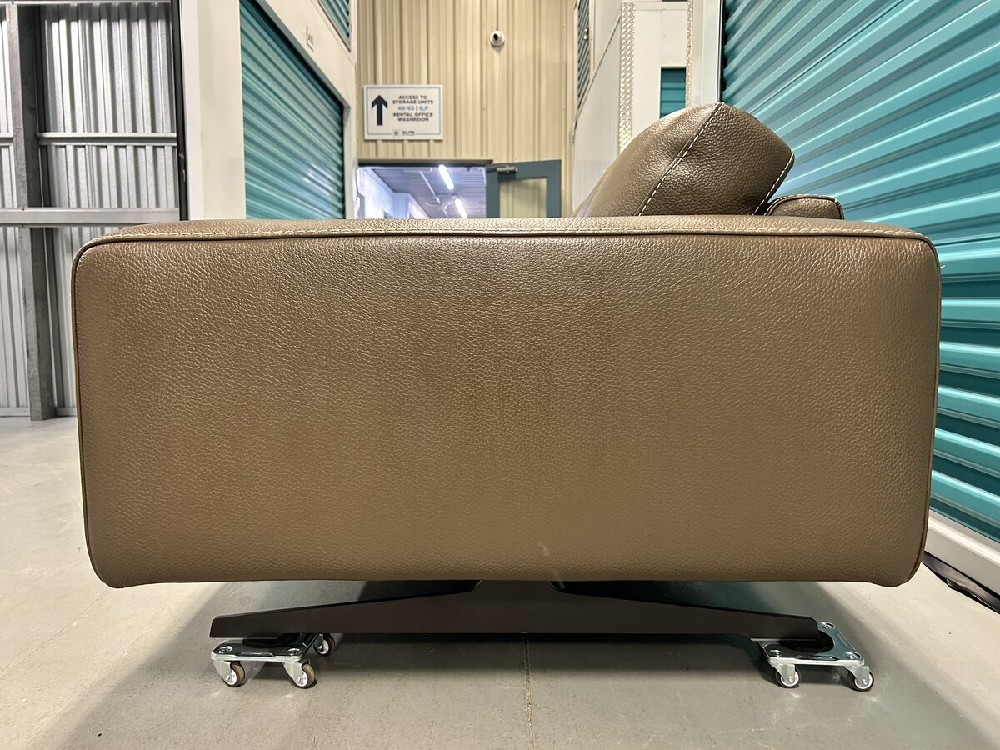
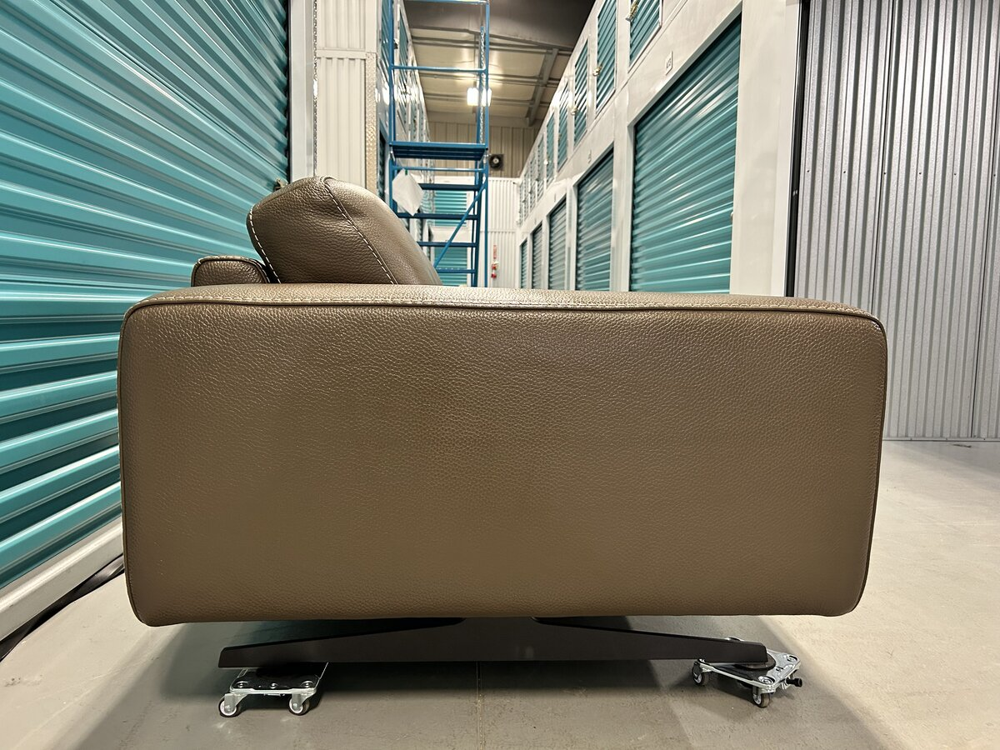
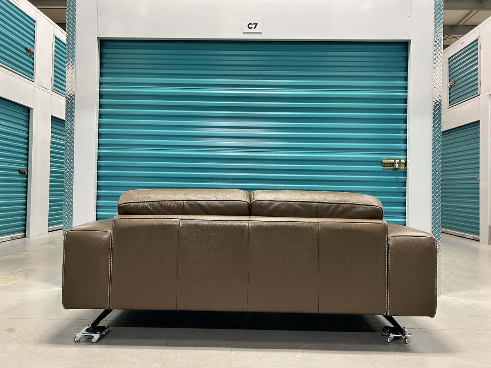
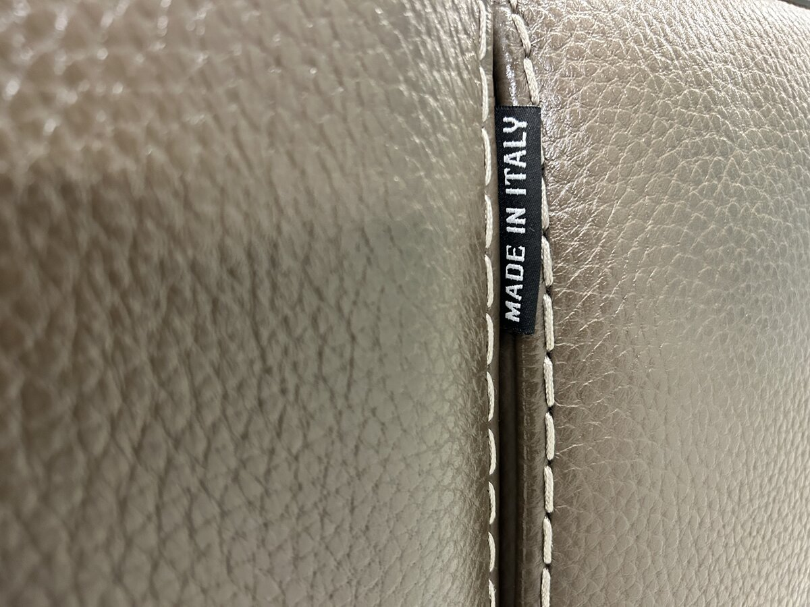

Como Maxi Apartment Sofa — Fango Victoria Leather
Description
Bracci is a Tuscan leather-furniture house that builds to order in the Quarrata furniture district — a small-batch Italian maker whose pieces rarely turn up on the secondary market in Edmonton. The Como is its low, clean-lined contemporary two-seater — Bracci calls it a "maxi" loveseat, but at 78 inches wide and 40 inches deep it sits and lives like a compact apartment sofa — the depth in particular is closer to a full sectional than a typical two-seater, which means genuinely generous seating rather than a perch. A tailored bench with track arms and a quietly architectural stance lifted on slim metal feet. The story of this piece is the hide. It is upholstered in Bracci's Category 35 Victoria leather, a thick 1.6 to 1.8mm semi-aniline cowhide that is embossed for durability and tanned start to finish in Italy. The colourway is Fango, a warm taupe-greige that shifts with the light and sits comfortably against almost any palette. Because the leather is consistent from hide to hide rather than heavily corrected, it keeps a natural hand and shows the gentle grain variation that only real full-thickness leather does. The tailoring is meant to be seen. Heavy contrast baseball stitching — Bracci's factory Option 305 — runs the arms, seat, and back to emphasize the thickness of the hide and the precision of the seams. It is the visual signature of the design. Under the upholstery is a serious frame: kiln-dried solid fir and beech reinforced with hardwood dowels and double corner blocks, over a tightly spaced 3-inch high-resilience elastic webbing system. It is a heavy, commercial-grade build, and it is the reason a well-kept Bracci holds its shape and sits the same for years.
Features
- Bench-made in Italy; Victoria leather tanned 100% in Italy
- Category 35 Victoria semi-aniline cowhide, 1.6 to 2.0mm thick, embossed for protection
- Fango colourway with a breathable semi-aniline hand and light protection against fading and marks
- Option 305 heavy-thread contrast baseball stitching
- Kiln-dried solid fir and beech frame with hardwood dowels and double corner blocks
- 3-inch high-resilience interlocking elastic webbing spaced at 1.5-inch intervals
Condition
Includes
All designer pieces are inspected for construction, materials, and manufacturer consistency before listing.
Have one like this? We’d buy yours back — sell your leather sofa →
← All Available PiecesFrequently Asked Questions
Is this genuine leather?
Yes. The Como is upholstered in Bracci's Category 35 Victoria leather, a thick semi-aniline cowhide tanned in Italy. It is real full-thickness hide, not bonded or faux leather, which is why it shows natural grain variation and keeps a soft, breathable hand.
Is it really made in Italy?
Yes. The piece is bench-made in Italy and carries its original Made in Italy tag, and the Victoria leather is tanned start to finish in Italy. Bracci is a Tuscan furniture house based in the Quarrata district.
What is the Fango colour like?
Fango is Italian for mud, and the colour is a warm taupe-greige. It reads as a soft neutral that shifts slightly with the light and pairs easily with both warm and cool palettes, so it works in most rooms without dominating them.
How does semi-aniline leather wear?
Semi-aniline leather has a light protective finish over a natural dyed hide, so it resists fading and everyday marks better than pure aniline while still feeling soft and breathable. It develops a gentle patina over time rather than wearing out. Wipe spills promptly and keep it out of direct, prolonged sun.
Do you deliver?
Yes. We deliver throughout Edmonton and surrounding areas, and we arrange delivery across Alberta on request. Delivery is offered for an additional fee that depends on distance and access.